Nobody claims the Banewaters. It is a sump of toxic runoff where old synth stills still drip into the sludge, and the locals give it a wide berth. Most of the stills are long dead, but one still works, and anyone with the right buyers could turn what it brews into credits.
So when The Midnight Theatre quietly lay claim to it, it should have meant nothing. The Delaque like places nobody watches, and a working still in a forgotten sump suits them well. Their whisper network already has buyers lined up.
But The Carrion Psalm have not forgotten the Pyroclave. That promethium was meant for their fires, a blessing tricked out of worthy hands by Delaque deceit. has had his people watching the Theatre ever since, and when word comes that the Delaque are heading into the Banewaters, the Psalm get there first and wait for them in the dark.
Setup
At stake
Synth Still territory
Battlefield effect
Increase the AP of Toxin (X) weapons by 1
Challenger
The Midnight Theatre
Table
2' × 2' - Centre objective 6" rather than 9"
Deployment
Face Off: the winner of a roll-off picks a battlefield edge and their opponent takes the opposite one. Each gang deploys between its own edge and a line 9" from the centre line. On a 2' table that is a 3" strip along each edge, 18" apart.
Objective
Turf War: from round three onwards, a gang wins in the Check for Victory step if it is the only one with models that are not Seriously Injured within 6" of the centre (9" in the book). If only one gang still has models on the battlefield, they win; if neither does, it is a draw.
Theatre side quest
Settle a Score: once both crews are deployed, one enemy model other than their Leader is picked at random. If it has been taken Out of Action, or has left the battlefield for any reason, by the Check for Victory step of any End phase, the side job is done. Target: Ratsong.
Psalm side quest
Settle a Score: once both crews are deployed, one enemy model other than their Leader is picked at random. If it has been taken Out of Action, or has left the battlefield for any reason, by the Check for Victory step of any End phase, the side job is done. Target: Skimbleshanks.
Crews
Scouting Force: Both gangs use Hybrid (D3+5). Both gangs rolled a 1, for 6 fighters each. Theatre: 6 fighters, 715 rating Psalm: 7 fighters, 875 rating, including Ratsong as an extra Bonepicker from Without Number
The Midnight Theatre navigate the toxic sump waters and approach from the south, through the ruins of an old Synth Still manufactorum complex. Their target is a functioning still in a relatively clear area of the ruins. The Carrion Psalm lie waiting near a sealed ventilation tunnel on the opposite side of the clearing.
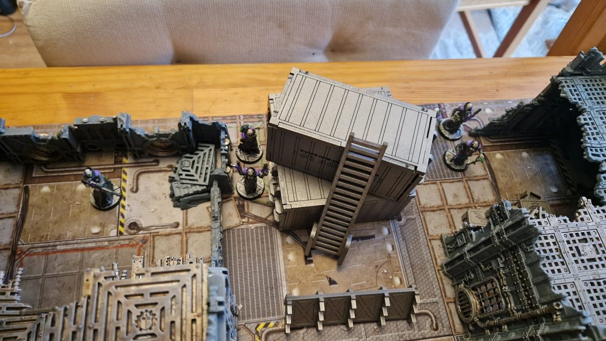
The Midnight Theatre come to claim the still…
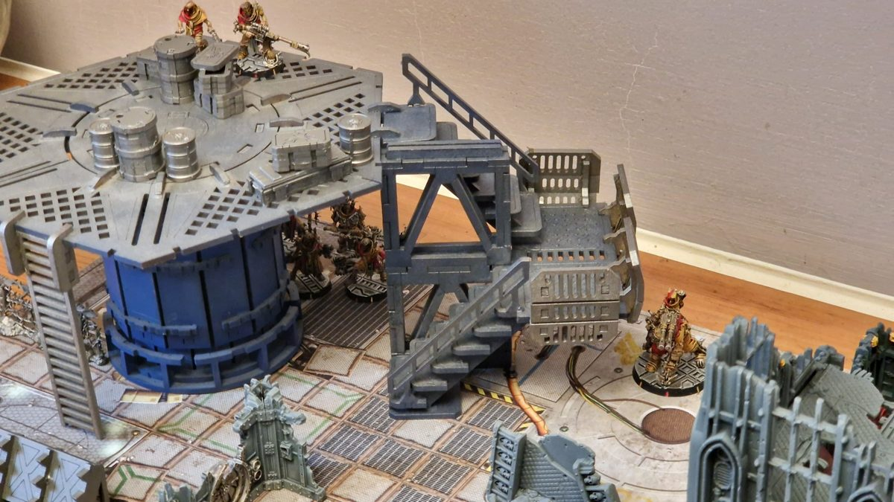
…but the Carrion Psalm lie in wait.
1
Round 1: Snipers' duel
gives the word and kicks Amen forward. He charges his twin heavy stubbers and swings them round to open fire at the shapes in the shadows. Rounds fly across the clearing and kick up rubble and debris around and .
Deus and Amen - Twin-linked Heavy StubberMisses
To Hit (4+)Misses
Note: Bulging Biceps to move at Initiative and fire a heavy weapon.
As soon as the Cawdor make their presence known, climbs the ruined tower to find a vantage point to cover the Theatre's advance.
But is watching from the top of the sealed vent. The Psalm's sniper takes position behind a stack of crates and fires.
Blessed Filth - Long RifleDemeter suppressed
To Hit (4+)Hits
To Wound (3+)Wounds
Save (5+ +1 cover)Saved, Suppressed
The shot cracks against the iron bars in front of , forcing him to duck back and stay behind cover. Below him, rushes forward through the hail of lead from , getting out of the narrow alleyway killzone and into the cover of a ruined wall.
On the sealed vent, scurries up behind some crates to keep 's flank covered.
With the battle now underway, draws on the voices of the Psychoteric Choir and reaches into the dark, wrapping himself in a Perfect Void.
Deuteronomy - Perfect VoidPerfect Void manifested
Willpower 9 +1Manifests
Note: +1 from Psychoteric Choir, for being within 3" of two friendlies. Rules note: I got this wrong. Deuteronomy should have taken a Maintain (Single) action for the Continuous Effect to persist after his activation.
Cloaked in silence, he follows the advance towards the centre. Opposite, strides forward into the central clearing, reciting a hymn of Redemption.
follows the main Delaque advance, staying back to provide support. He notices on the vent above and raises his lasgun.
The las-bolt strikes true and the Psalm's sniper crumples. Not wanting to get caught in a shooting war with the Delaque, rushes forward into the clearing. He drives his congregation on, calling on the faithful to keep pace.
rushes forward into the cover of the wall around the still and hip-shoots his plasma gun at , just visible atop Amen as he strides through the ruins.
Rumpleteaser - Plasma GunMissed, Out of Ammo
To Hit (4+)Missed
Ammo (6+)Out of Ammo
Note: Rumpleteaser uses Hip-shooting to rush to the wall and fire on Deus.
The bolt flashes past and off into the dark, and the coils of the plasma gun fade to a dull glow. rushes into the clearing, confident in the protection of the God-Emperor.
follows ' lead and rushes into cover beside him. Finally, follows his Word Keeper and takes his place at his side. Both gangs now stand within reach of the centre.
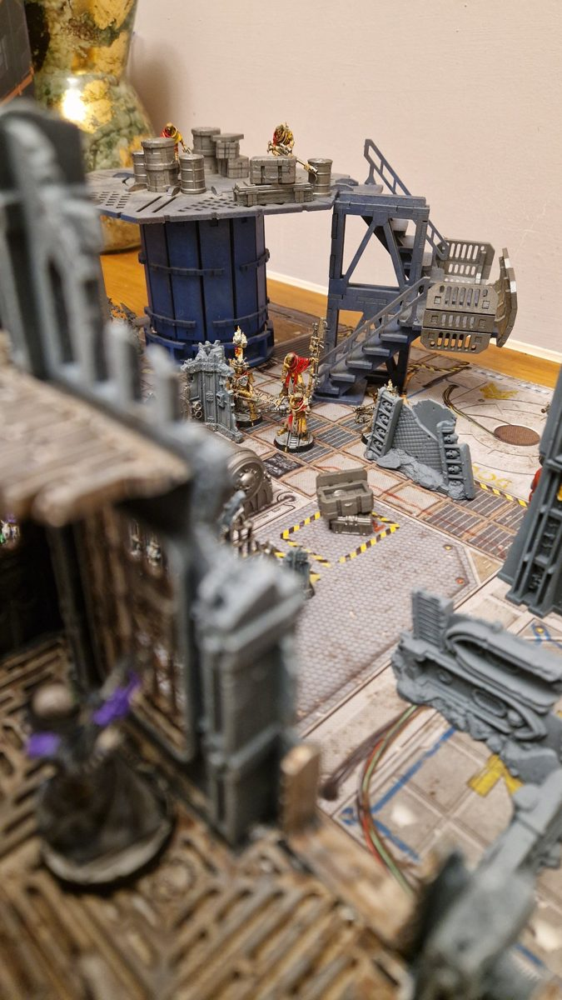
Demeter covers the advance.
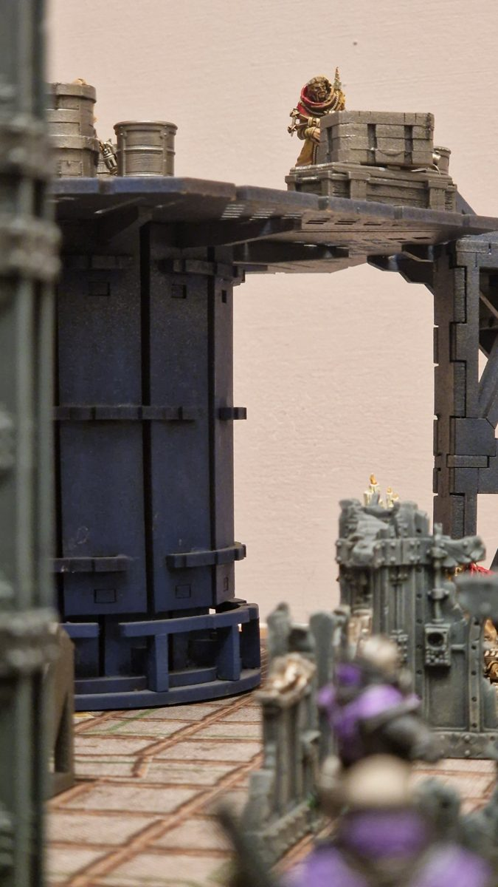
Blessed Filth falls to Jellylorum's lasgun.
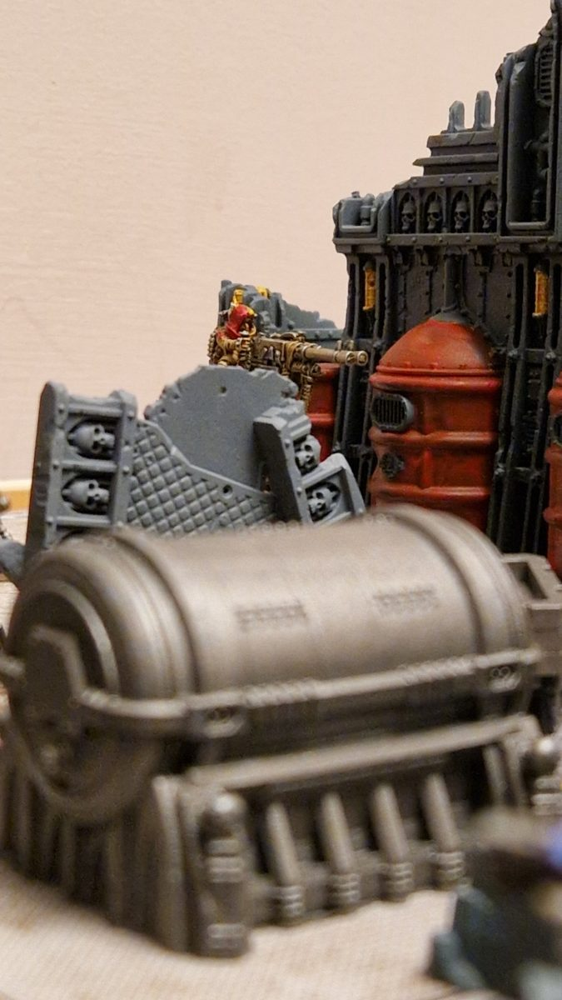
Deus riding Amen through the ruins.
Positions at the end of round 1
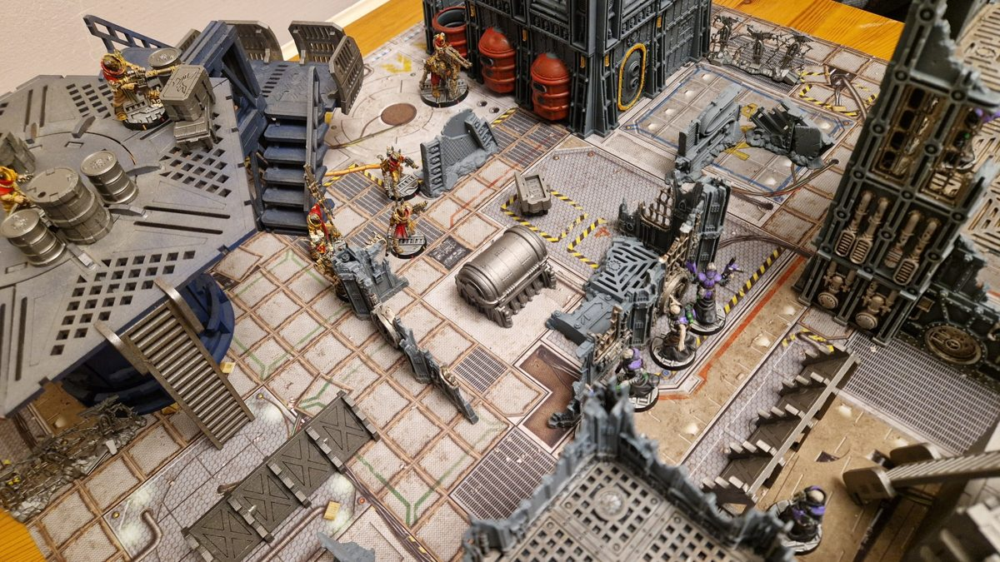
Both gangs approach the still.
SSuppressed
WWounded
AOut of ammo
SISerious Injury
VPerfect Void
End phase: both gangs have fighters within 6" of the centre, so the turf is still contested.
2
Round 2: Eternal Slumber
The Theatre are quicker off the mark. is still pinned behind the iron bars of the tower and can't watch over the clearing, so takes matters into his own hands. He slams a fresh cell into his plasma gun, leans out from the wall around the still and fires at as he crosses the clearing.
Rumpleteaser - Plasma GunEzekiel seriously injured, Out of Ammo
To Hit (4+)Two hits
To Wound (3+)One wound
Save (5+ +1 cover AP -2)Two wounds
InjurySeriously Injured
Ammo (6+)Out of Ammo
The plasma bolt drops in the middle of the clearing, and seeing their champion fall shakes the Psalm.
The Carrion Psalm - Nerve ChecksElijah and Gutter Cantor suppressed
Mordecai (Cool 8)Passes
Elijah (Cool 7)Suppressed
Gutter Cantor (Cool 6)Suppressed
Rules note: I got this wrong. Nerve tests should only be taken when a friendly fighter is taken Out of Action, not Seriously Injured, so these tests should not have happened.
holds his nerve, but and hesitate and drop into cover. pushes Amen further into the ruins and rakes the wall around the still with stubber fire, but the rounds only chew into the stonework.
Deus and Amen - Twin-linked Heavy StubberMisses
To Hit (4+)Misses
Note: Bulging Biceps to move at Initiative and fire a heavy weapon.
slips along to the next section of wall and opens fire on with both pistols.
Skimbleshanks - PistolsMisses and fails to wound
Flechette Pistol
To Hit (4+)One hit
To Wound (3+ Toxin)Fails to wound
Nerves of Steel (Cool 8)Not suppressed
Autopistol
To Hit (4+)Misses
barely flinches. won't stay down any longer. Driven by Redemptionist zeal, he breaks from cover and charges at .
Elijah Emberchoir - Charge1" short!
Charge move (3+)1" short!
Note: Used the Adrenaline Surge tactic for an extra action, allowing him to charge from suppressed.
He stumbles to a halt an inch short of the Ghost, alone in the open, and finally has a clear shot from the tower.
Demeter - Long RifleElijah takes a wound and is suppressed
To Hit (3+)Hits and Knockback
To Wound (3+)Wounds
Save (5+ AP -1)Takes one wound and Suppressed
In the middle of the clearing, crawls back towards , who drags him into cover and gets him back on his feet.
Ezekiel Crows - RecoveryRecovers
RecoveryRecovers
Note: +1 die from Gutter Cantor assisting.
steps out from behind the Theatre's line and puts a las-bolt into , but it glances off the Deacon's armour. The impact still forces him to keep his head down.
Jellylorum - LasgunElijah suppressed
To Hit (4+)Hits
To Wound (4+)Wounds
Save (5+)Saved, Suppressed
Up on the sealed vent, moves to the crates beside the fallen and takes a shot at , but the stub gun can't reach that far.
Ratsong - Stub GunMisses
To Hit (5+)Misses
keeps the Perfect Void wrapped around him.
Deuteronomy - Maintain PowerRolled 10, passes
Willpower 9 +1Rolled 10, passes
Note: +1 Willpower from Psychoteric Choir.
He walks calmly towards the wounded Deacon and raises his flechette pistol.
Blessed Filth flees. He later recovers and does not succumb to his wounds.
3
Round 3: Settling the score
Shaken but not broken, the Psalm act first. drives Amen on through the ruins and sprays stubber fire at . Up in the tower, holds his fire, waiting for a better target.
Deus and Amen - Twin-linked Heavy StubberMisses
To Hit (4+)Misses
Note: Bulging Biceps to move at Initiative and fire a heavy weapon.
gets his plasma gun working again and takes another shot at , but it goes wide and the gun runs dry once more.
Rumpleteaser - Plasma GunMisses, Out of Ammo
To Hit (4+)Misses
Ammo (6+)Out of Ammo
sees lying at the foot of the wall and charges across the open ground to finish him. It's the moment has been waiting for, and he fires on Overwatch.
Demeter - OverwatchMordecai not suppressed
To Hit (3+)Hits with Knockback
To Wound (3+)Fails to wound
Nerves of Steel (Cool 8)Not suppressed
Note: Mordecai was not suppressed, did not take a wound and did not roll an Injury die, so his activation is not interrupted.
The round hits and knocks him back a step, but it doesn't stop him.
Mordecai - ChargeCharge makes it in
Charge move (2+)Charge makes it in
He reaches , stands over him and raises his chainglaive.
Mordecai - Coup de GraceSkimbleshanks out of action
Mordecai (Str 3)
Skimbleshanks (Str 3)Skimbleshanks out of action
Note: Skimbleshanks is later captured.
He brings it down, and the Ghost won't get up again. Seeing one of their own executed shakes the Delaque, and freezes.
Mistoffelees - Nerve TestMistoffelees suppressed
Cool 6Suppressed
keeps the Perfect Void in place and charges , his shock stave crackling.
Deuteronomy - Maintain PowerMaintains
Willpower 9Maintains
Deuteronomy - Shock StaveMordecai takes a wound
Initiative 4 +2 charge bonus
Shock Stave
To Hit (3+)Two hits, auto wound
Save (5+ +1 Parry)One saved, takes a wound
Web Gauntlet (secondary)
To Hit (3+)Hits
To Wound (4+)Fails to wound
Mordecai - ChainglaiveMisses
Initiative 1
Chainglaive
To Hit (3+)Misses
Back on his feet, advances across the clearing and empties his autopistol at behind the wall.
Ezekiel - AutopistolRumpleteaser takes a wound and is suppressed
To Hit (3+)Three hits
To Wound (4+)Two wounds
Save (6+ +1 cover)One wound caused
InjurySuppressed
takes careful aim at up on the vent.
Jellylorum - LasgunMisses
To Hit (4+ +1 aimed shot)Misses
follows close behind and binds another of his wounds.
Still shaken, slips back into cover.
ducks back behind the crates.
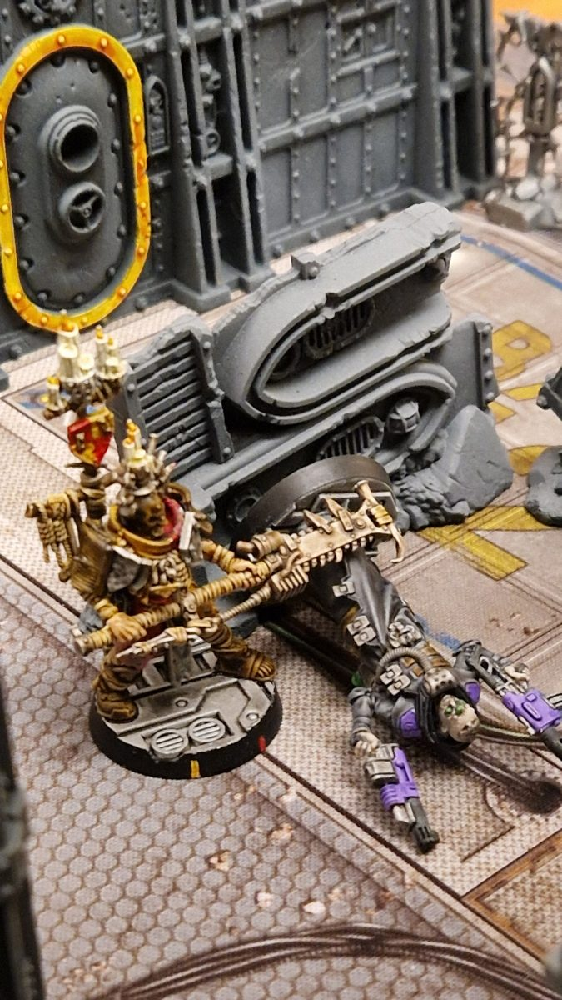
Mordecai stands over Skimbleshanks.
Positions at the end of round 3
SSuppressed
WWounded
AOut of ammo
IInjured, 0 wounds
💀Out of Action
VPerfect Void
End phase: both gangs have fighters within 6" of the centre, so the turf is still contested.
The Midnight Theatre - Bottle CheckThe Theatre hold
Deuteronomy (Leadership 8)Passes
4
Round 4: Glaive and stave
The Delaque move first, but 's plasma gun is empty and he's wounded, so he falls back behind the wall rather than waste the turn.
In the middle of the clearing, and are still locked in combat. Mordecai swings his chainglaive.
Deuteronomy - Reaction: Web GauntletMisses
Initiative 4
Reaction: Web Gauntlet
To Hit (3+)Misses
Deuteronomy - Counter-attack: Shock StaveMisses
Initiative 1
Counter-attack: Shock Stave
To Hit (3+)Misses
Mordecai - ChainglaiveDeuteronomy takes a wound
Initiative 1
Chainglaive
To Hit (3+)Two hits
To Wound (3+)One wound
Save (5+ AP -1)Takes one wound
The chainglaive finally bites into . Behind the wall, reaches and patches up his wound.
swings Amen round towards the tower to fire on , but the sniper has been watching him.
Demeter - OverwatchDeus and Amen take a wound and are suppressed
To Hit (3+)Hits with Knockback
To Wound (4+)Wounds
Save (6+ AP -1)One wound caused, Suppressed and activation interrupted
Note: Overwatch finishes Deus and Amen's activation.
's shot hits the Stig-Shambler before he can fire, and staggers to a halt. keeps the Perfect Void in place.
Deuteronomy - Maintain PowerMaintained
Willpower 9Maintained
Then he strikes back at .
Deuteronomy - Shock StaveMordecai takes a wound
Initiative 4
Shock Stave
To Hit (3+)Two hits, one auto wound
To Wound (3+)Two wounds
Save (5+ +1 Parry)Causes one wound
Web Gauntlet (secondary)
To Hit (3+)Misses
Mordecai - ChainglaiveDeuteronomy takes a wound
Initiative 1
Chainglaive
To Hit (3+)One hit
To Wound (3+)One wound
Save (5+ AP -1)Takes one wound
pushes forward and fires at again, undoing 's work.
Ezekiel - AutopistolRumpleteaser injured and suppressed
To Hit (3+)Two hits
To Wound (4+)Two wounds
Save (6+ +1 cover)One wound
InjuryInjured and Suppressed
leans out of cover and takes an aimed shot at .
Mistoffelees - Stub GunMisses
To Hit (4+)Misses
moves up beside and fires back at .
Gutter Cantor - Polearm/AutogunMisses
To Hit (4+)Misses
stays behind the crates on the vent, out of sight.
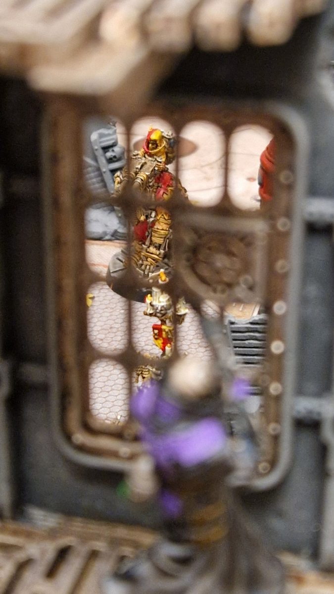
Demeter stops Amen in his tracks.
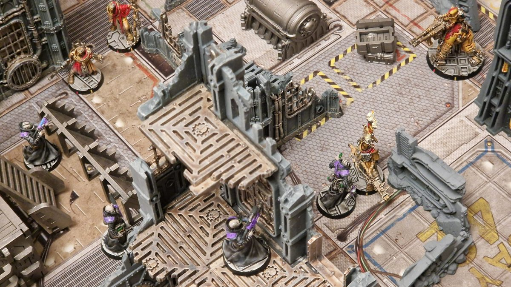
Mordecai and Deuteronomy locked in combat.
Positions at the end of round 4
SSuppressed
WWounded
W2Wounded, number shows wounds taken
AOut of ammo
IInjured, 0 wounds
VPerfect Void
End phase: both gangs have fighters within 6" of the centre, so the turf is still contested.
5
Round 5: Mordecai's gamble
The Psalm strike first. is quicker, and both men know it, but has no choice: the Delaque leader has to fall. He swings his chainglaive.
Deuteronomy - Reaction: Web GauntletMordecai webbed
Initiative 4
Reaction: Web Gauntlet
To Hit (3+)One hit
To Wound (4+)Mordecai webbed
Note: Mordecai is subject to the Webbed condition: he cannot move and suffers -1 to all hit rolls.
Deuteronomy - Counter-attack: Shock StaveFails to wound
's web gauntlet snares in sticky strands, but even webbed, his swing finds its mark. The glaive cuts through Deuteronomy's coat and the Master of Shadow collapses in the clearing. falls back again, still unable to reload.
spots on his own and charges him.
Ezekiel Crows - ChargeFails to wound, fails to hit
Initiative 3 +2 charge bonus
Autopistol
To Hit (3+)Hits
To Wound (4+)Fails to wound
Cleaver
To Hit (3+)Fails to hit!
Every swing of the cleaver misses. steps inside his reach and hits him with his bare hands.
Jellylorum - UnarmedEzekiel takes a wound
Initiative 4
Unarmed
To Hit (4+)Hits
To Wound (4+)Wounds
Save (5+)Causes one wound
fires at , then slips back into the shadows.
Mistoffelees - Stub GunMisses
To Hit (5+)Misses
pushes Amen forward and fires at in the tower.
Deus and Amen - Twin-linked Heavy StubberMiss
To Hit (4+)Miss
Note: Bulging Biceps to move at Initiative and fire a heavy weapon. Twin-linked to re-roll the Rapid Fire dice.
takes an aimed shot at , a chance to take down the Psalm's leader in return.
Demeter - Long RifleMisses!
To Hit (2+)Misses!
takes aim at .
Gutter Cantor - Polearm/AutogunMistoffelees suppressed
To Hit (3+)One hit
To Wound (4+)Suppressed
Still held fast by the webbing, cannot follow up, and crawls away from him towards . His wounds are too deep, and he passes out before he gets there. It's a lesson he won't forget.
stays safe on the vent, and slips back into the dark. When the smoke clears, only the Psalm are left standing in the clearing around the still.
Positions at the end of round 5
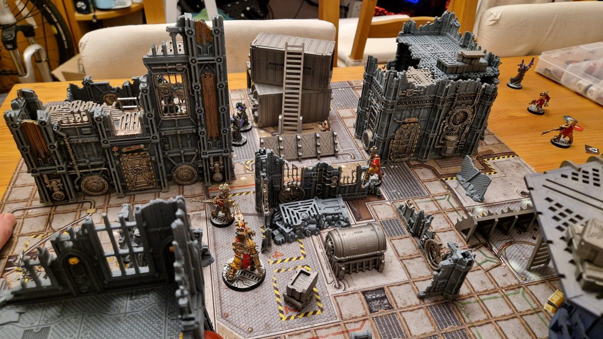
The Psalm hold the centre, with the fallen at the table edge.
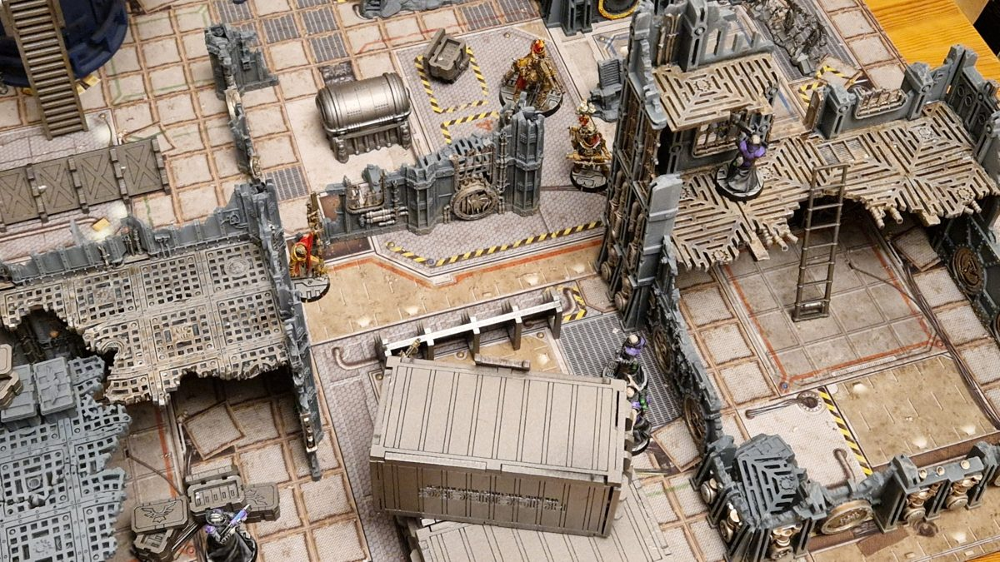
The Theatre pull back to the tower and the containers.
SSuppressed
WWounded
W2Wounded, number shows wounds taken
AOut of ammo
IInjured, 0 wounds
💀Out of Action
End phase: only the Psalm have fighters within 6" of the centre. The Carrion Psalm win.
The Midnight Theatre - Bottle CheckThe Theatre hold
Demeter (Leadership 7)Holds
Aftermath
The Carrion Psalm take the Synth Still
The Delaque slip back into the ruins, dragging with them, and the Banewaters belong to the Psalm. Old Deuteronomy has lived many lives, and this won't be his last. He recovers, but losing to the Word Keeper is a lesson he won't forget. isn't so lucky. The Psalm carry him away from the clearing, and he is executed. On the Psalm's side, makes a full recovery, but is left with a Grievous Wound from the poisoned needles and the Eternal Slumber.
Gang
Territory
Side quest
Casualties
Credits
Reputation
The Carrion Psalm
Synth Still
Settle a Score: completed
Elijah: Grievous Wound Blessed Filth: recovers
+70
+1
The Midnight Theatre
–
Settle a Score: failed
Deuteronomy: Lesson Learnt Skimbleshanks: captured and executed